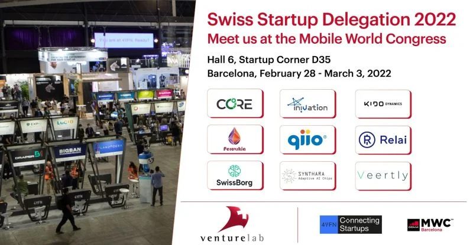

Join qiio at the Mobile World Congress in Barcelona Feb 28 – Mar 3, 2022!
You will find our team at Hall 6 – 4YFN booth 6D35.4
Take the chance to arrange a meeting beforehand with the team there: Felix Adamczyk, Dorothy Kohl, Pascal
Comini, Aymen Zayet, or email info@qiio.com
qiio is part of the Swiss National Startup Team organized by Venture Leaders Mobile. It comprises 9 of the
most promising Swiss technology startups.